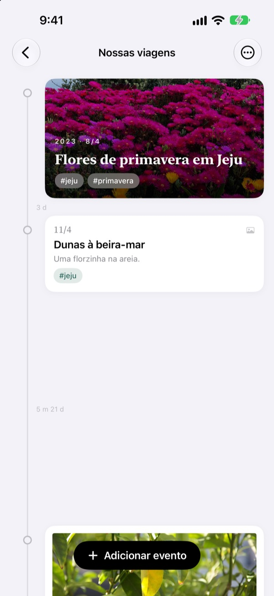
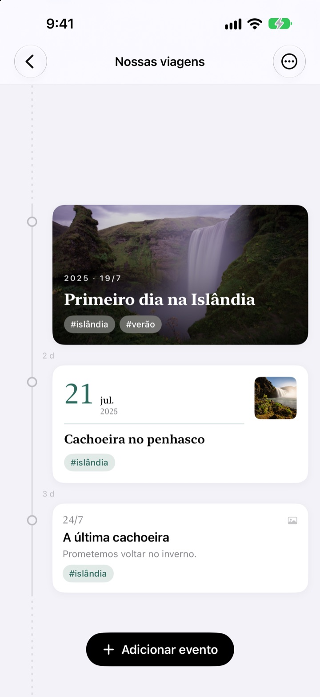
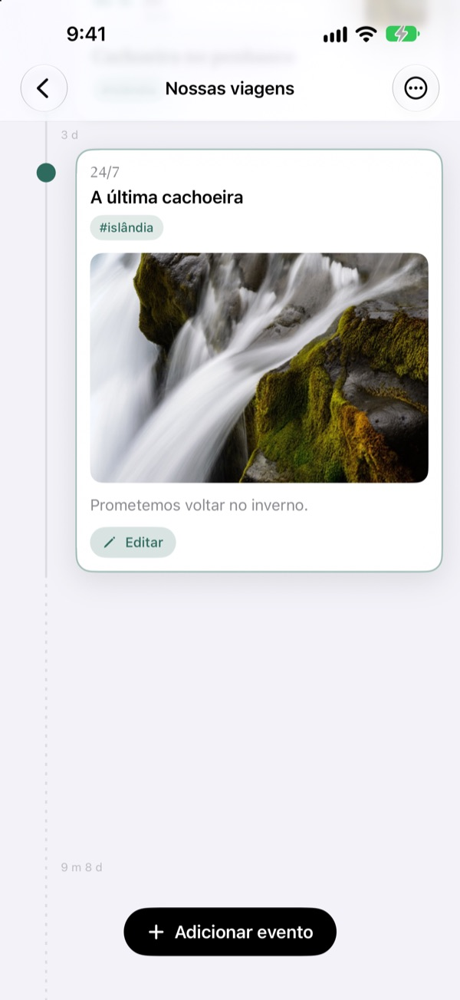
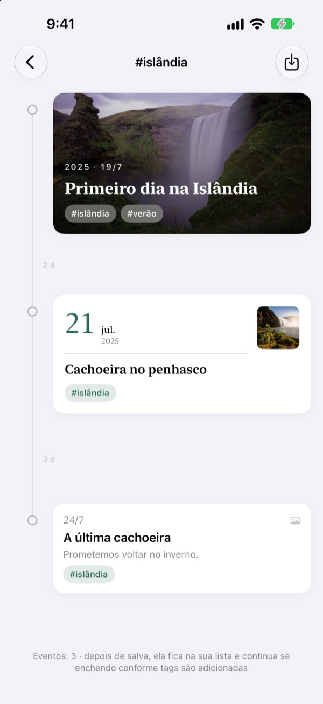
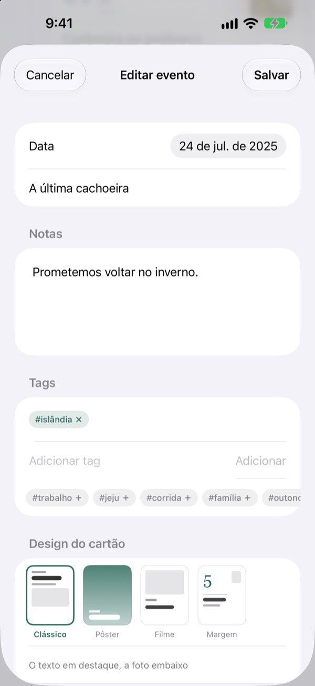

Uma linha do tempo
que estica com o tempo
Três dias e cinco dias ficam na proporção de 3 para 5. Uma pausa longa, como dois anos e quatro meses, se dobra numa linha pontilhada. Só de olhar o espaço, você entende como o tempo passou.
Todos os recursos são grátis. Para iPhone e iPad.

Estique os espaços você mesmo
Cada botão adiciona um evento depois do último. O espaço segue a mesma regra do app.
A fototeca não mostra o tempo
A fototeca organiza tudo por data, mas três dias e dois anos ocupam o mesmo degrau. O Yeoul separa os eventos pelo tempo que passou entre eles, e você vê na hora quais fases foram agitadas e quais foram tranquilas.
O espaço é o tempo
A linha inteira usa uma só escala: o mesmo período tem o mesmo tamanho em qualquer parte da tela. Cada espaço mostra a duração real, como 3 d ou 5 m 21 d.
Eventos muito próximos ainda ganham um respiro, e pausas muito longas se dobram numa linha pontilhada.

Ele acha as fotos daquele dia
Defina a data do evento e toque em Buscar fotos relacionadas para ver as fotos tiradas naquele dia. Nenhuma serve? Em Buscar manualmente você escolhe outra.
Toque num evento na linha e a foto e o texto abrem ali mesmo.

Uma tag junta momentos espalhados
Coloque uma tag como #Islândia nos eventos, toque nela, e todos os eventos com essa tag, de todas as linhas, se juntam numa nova.
Salve e ela fica na sua lista, recebendo sozinha os próximos eventos com a tag.

Um cartão que combina com cada momento
Clássico coloca o texto em primeiro lugar, Pôster enche o cartão com a foto, Filme emoldura como uma foto revelada e Margem deixa uma data grande em destaque. A prévia muda na hora.

Comece em três passos
- 1
Crie uma linha do tempo
O primeiro ano do bebê, um namoro, uma viagem: cada uma com nome e cor.
- 2
Adicione eventos
Escreva a data e o título e coloque uma foto daquele dia.
- 3
Coloque tags
Eventos com a mesma tag se juntam, mesmo vindo de linhas diferentes.
Quatro designs de cartão
- Clássico
- O texto vem primeiro, com a foto embaixo.
- Pôster
- A foto ocupa o cartão inteiro, com um título grande por cima. Sem foto, entra a cor da linha do tempo.
- Filme
- Uma foto com borda de papel fotográfico, letra de máquina de escrever e carimbo de data.
- Margem
- Um número de data grande e uma foto pequena. Aqui as palavras são as estrelas.
Um evento novo começa com o design do cartão mais recente daquela linha.
Todos os recursos são grátis
Grátis
- Quantas linhas do tempo quiser, com nome e cor
- Fotos, histórias e tags em cada evento
- Buscar as fotos do dia do evento
- Linhas do tempo de tags salvas
- Quatro designs de cartão
- Sincronização via iCloud entre iPhone e iPad
- Registrar com Atalhos e Siri
Apoie o desenvolvedor
- Escolha uma gorjeta pequena, média ou grande
- Não libera nada. É só um jeito de agradecer
Fica nos ajustes do app, para quando der vontade.
Sem anúncios e sem assinatura.
Perguntas frequentes
Por que os espaços entre os eventos são tão diferentes?
O Yeoul separa os eventos pelo tempo que realmente passou. Todos os espaços usam a mesma escala, então três dias e cinco dias ficam na proporção de 3 para 5. Eventos muito próximos mantêm um espaço mínimo para não se sobrepor, e pausas muito longas viram uma linha pontilhada com a duração real, como 2 a 4 m.
Não aparecem as fotos daquele dia.
Para buscar fotos por data, o app precisa de acesso às suas fotos. Permita em Ajustes > Yeoul > Fotos. O Yeoul procura as fotos tiradas da meia-noite à meia-noite daquele dia, no fuso horário do aparelho. Se preferir não liberar o acesso, toque em Buscar manualmente logo abaixo.
O que é uma linha do tempo de tags?
Toque na tag de um evento e o Yeoul junta numa só linha todos os eventos com essa tag, de todas as suas linhas. As que você vê sempre podem ficar salvas na lista. Nada é copiado: se você editar o evento original, a mudança aparece aqui, e apagar a linha de tags não apaga os eventos.
Por que não dá para adicionar eventos numa linha de tags?
A linha de tags é uma visualização reunida por tag, não um lugar para guardar eventos, então não tem como saber a qual linha o evento novo pertence. Adicione o evento na linha dele, com a tag, e ele aparece aqui sozinho.
Dá para registrar sem abrir o app?
Dá. Use Registrar um evento no app Atalhos ou com a Siri e escolha só a linha e o título. Sem data, fica registrado com o horário atual.
Consigo ver minhas linhas em outros aparelhos?
Sim, em qualquer iPhone ou iPad conectado ao iCloud com a mesma Conta Apple. Confira em Ajustes > seu nome > iCloud se o iCloud está ativado. Dependendo da conexão, pode levar um pouquinho para aparecer.
Como apago meus registros?
Deslize uma linha para a esquerda na lista ou toque em Editar. Ao apagar uma linha, os eventos dela também são apagados. O que sobrar no iCloud pode ser removido no gerenciamento de armazenamento dos ajustes do iCloud.
O desenvolvedor vê meus registros?
Não. Seus registros e fotos ficam só nos seus aparelhos e no seu próprio iCloud, e o desenvolvedor não tem acesso. Os detalhes estão na política de privacidade logo abaixo.
Como relato um bug ou sugiro uma ideia?
Direto pelos ajustes do app, por e-mail ou pelo Instagram em @lee25_ios. Contar o modelo do aparelho, a versão do iOS e o que aconteceu ajuda a gente a resolver mais rápido.
Dúvidas ou sugestões? Escreva para leeo@kakao.com.